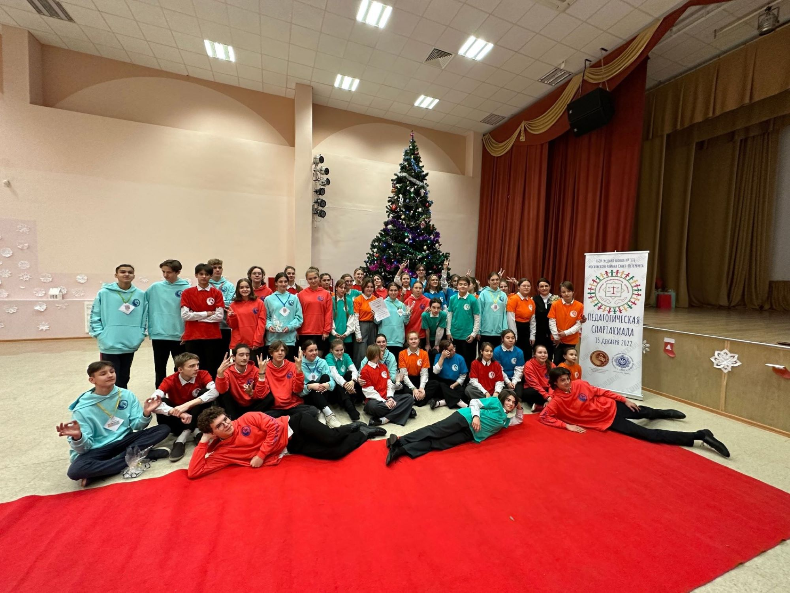

Юридическим языком: вожатый – это сотрудник детского лагеря, физическое лицо, которое...
Однако если задать этот вопрос тем, кто хоть раз работал в лагере, однозначного ответа вы не получите, так как вожатый – личность многогранная, который многое должен знать и уметь.
Конечно же вожатый, это человек, чья работа очень ответственна и требует дисциплины и порядка во всех вопросах. Но есть в этой профессии и много других не менее важных составляющих.
Вожатый – это старший друг для своих подопечных, с которым можно обсудить проблемы или поделиться сокровенным; который выслушает и даст дельный совет.
Вожатый – человек, любящий детей, который и сам в каком-то смысле является ребенком. Такому человеку легко найти общий язык с детьми и настроится на одну волну. Дети, в свою очередь, замечают это и легче идут на контакт.
Вожатый, как правило, человек творческий, у которого миллион идей для выступлений и развлечения детей. Всегда организует и проведет интересное коллективно-творческое дело . Также он должен быть и хорошим организатором, чтобы суметь сплотить детей общей целью и поставить на сцене отличный номер. Да так, чтобы это было интересно тем, кто готовит выступление и тем, кто его смотрит.
Вожатый – веселый и позитивный человек. Он никогда не даст заскучать или загрустить ребенку, потому что детский лагерь – это планета счастья, на которой нет места грусти. Вожатый за этим строго следит. Поэтому это еще и чуткий человек.
В детском лагере для совсем юного ребенка вожатый – это еще и мама, и папа: отвести в медпункт, рассказать сказку перед сном и прочее.
Вожатый - учитель, который научит ребенка чему-то новому и полезному.
Вожатый - пример для подражания: он покажет, что зарядку делать обязательно, и расскажет, для чего это нужно, почему очень важно носить головной убор.
Таким образом, вожатый универсальный человек, который примеряет на себя сразу несколько профессий: педагог, психолог, аниматор.
{% endblock %}